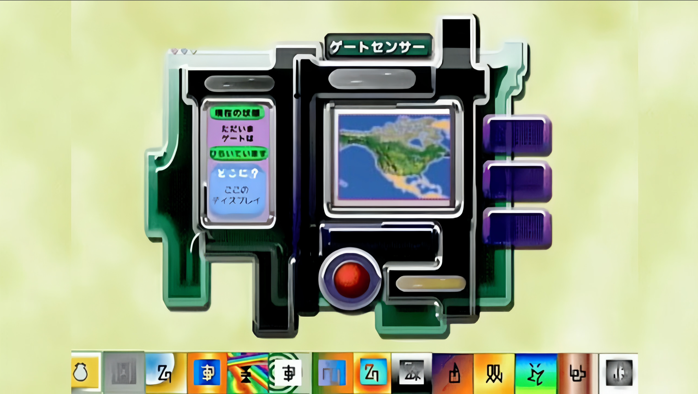

Digital Gate is an unofficial Digimon-inspired web app where fans can open a Digital Gate, explore Digital World maps, place Tamers and Digimon, use a Digivice, battle enemies, evolve Digimon, play music, and view analyzer-style Digimon profiles.
Explore Adventure, Tamers, Savers, and Xros Wars inspired digital zones, including digital forests, colosseums, Freezeland-style maps, villages, holy capitals, server trees, and green zones.
This is an unofficial fan-made project and is not affiliated with or endorsed by the official Digimon rights holders.